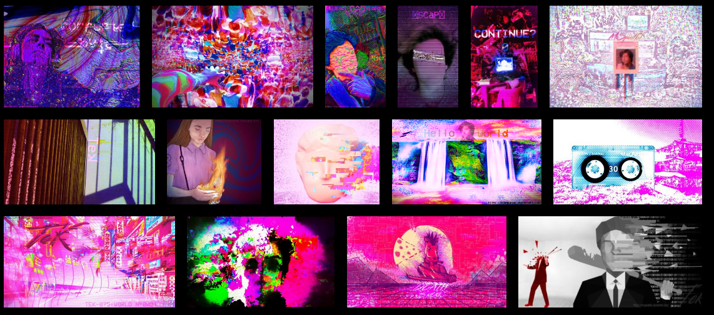
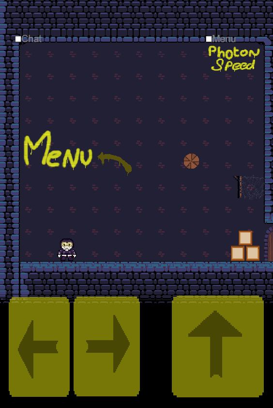
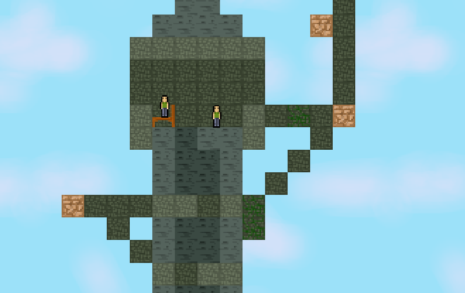
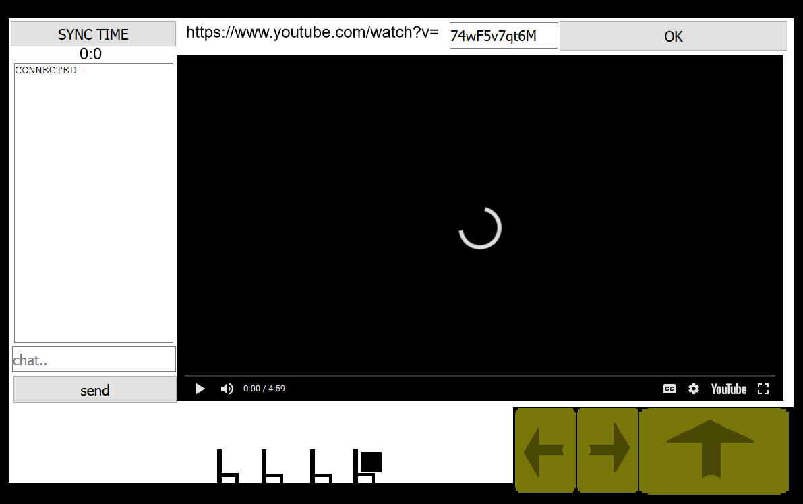

C:/Hello!
This website is a way to store/show some of my creations.
To try my game/experiment , [JUST CLICK ON THE IMAGE!] you'll be able to play the game you cliked on. Oh also you can keep scrolling, It's an adaptative design that appear the more you scroll down. Everything on this website is entirely made by me, Theo FRERE. Also I tried to make this website to look like an old science fiction computer screen. Enjoy.
C:/Redirect/ARTistic-stuff
Here is some of my creations:
C:/Redirect/Shop
When I have time, I like to make art. Over time, I started to make designs, and to sell hoodies. You can see here my deviant art page (where I store my digital art) and my shop (where I sell hoodies).
C:/In-browser/GOLF GAME [BETA]
That's an online golf game, your pc is the screen, your phone is the controler!

Sync between screen, phones, ect ect... Online and multiplayer!
C:/Download/Hello-world
Take your ticket to our big Adventure!

This "game" is an experiment, where anyone can draw "places" And every places have doors(drawned by users) who takes you, to other places. This way anyone can build a whole world.
-Inspierd by "game-books", this experiment is fully online, It allows users to create and share.
Made in construct2, exported in NW.js / DATABASE & HOSTED on FIREBASE.
[STILL UNDER CONSTRUCTION]
[Soon: Owning-room system]
C:/In-browser/SkeletonParty
Project made to try PHOTON multiplayer and sync object
online multiplayer PHOTON (up to 20 player)
Live physic object sync
Android APP (apk) OR online play in browser
Live Chat included
Race w/ friends & push them to their death!
I'v I mentioned sync object? because it was horrible to set up
-level up mechanics
-Skins
-Wall jump
C:/In-browser/Duck Drive
After I saw an image of a duck on a tire tracks, I instently wanted to make a driving duck game. Here it is.
[arrow to move, left click to spawn opponent, [Press [I]] to see how my IA works]
C:/In-browser/Z-project
I really enjoy the game cataclysm dda (an old zombie sim) And I want to remake it. Here's a demo.
The difficult part was to fake 3D and layers. It depend on the player position. The rest is pretty much just complex math.
[arrow to move, left click to shoot, [Press c] to open a door/window]
C:/In-browser/HORDES.FR
Project made to add even more RP on Hordes.fr
online multiplayer PHOTON (up to 20 player)
php saves
Creative mode construction (LIKE TERRARIA)
2D World builder LIVE
w/ 2 Layers
Live Chat
C:/In-browser/destructible-environment
Working on a canvas detection to make a destructible environment, like in the Worms games
This first try actually make a dotted map of the canvas, and only make dots with canvas behind it solid.
[left click to destroy, right click to restore.]
This second try is adding movable collision detection around the player (only solid when canvas behind)
[left click to destroy, right click to restore. [Press [I]] to see how it's made].
C:/In-browser/Realistic-Rope-[TEST-DEMO]
I was wondering If I was able to make a realistic rope system...
Made using array, UID , sprite and joins only!
[jump and click on a wall to grapple, press space to see how it's done]
C:/In-browser/Online-cinema
To sync a youtube player, and to see your friend on their chair, LIVE! ONLINE!
Made with C2 and PHOTON engine, with a youtube plugin.
[arrows or touch screen to move, use "sync" button to syncronise the screen if any errors [REALLY EARLY BUILD]]